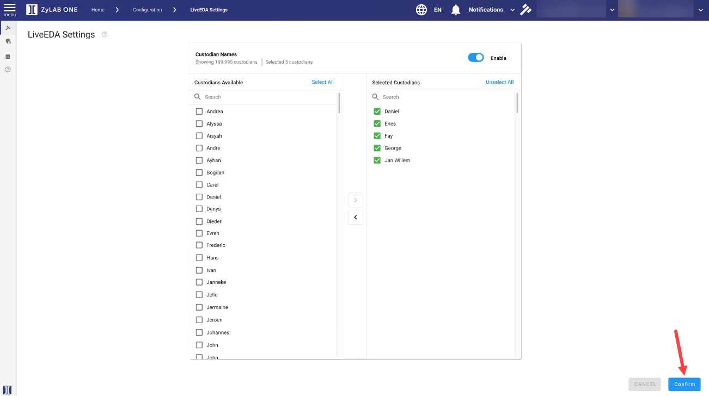

From the left-hand pane, select custodian(s) by clicking on the corresponding checkbox(es).
-
Click Select All to select all custodians.
-
Use Search to find and select (a) specific custodian(s).

Click on the arrows > < to add or remove custodian(s) to or from the Selected Custodian list.
Custodian(s) added to the Selected Custodians list, are the custodian(s) available for selection in the LIVE EDA investigation(s) created. 
When finished, click Confirm (located bottom-right).
